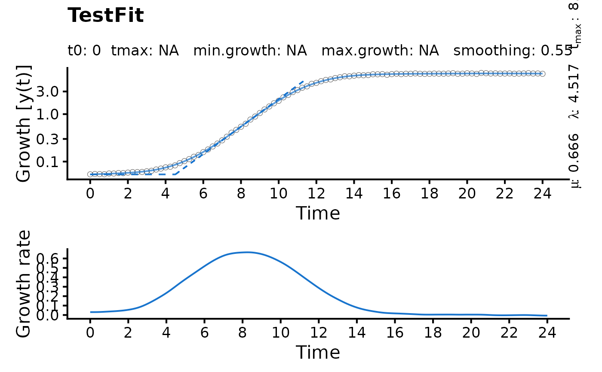

plot.gcFitSpline generates the spline fit plot for a single sample.
Usage
# S3 method for class 'gcFitSpline'
plot(
x,
add = FALSE,
raw = TRUE,
slope = TRUE,
deriv = TRUE,
spline = TRUE,
log.y = TRUE,
pch = 1,
colData = 1,
colSpline = "dodgerblue3",
basesize = 16,
cex.point = 2,
lwd = 0.7,
y.lim = NULL,
x.lim = NULL,
y.lim.deriv = NULL,
n.ybreaks = 6,
y.title = NULL,
x.title = NULL,
y.title.deriv = NULL,
plot = TRUE,
export = FALSE,
width = 8,
height = ifelse(deriv == TRUE, 8, 6),
out.dir = NULL,
...
)Arguments
- x
object of class
gcFitSpline, created withgrowth.gcFitSpline.- add
(Logical) Shall the fitted spline be added to an existing plot?
TRUEis used internally byplot.gcBootSpline.- raw
(Logical) Display raw growth as circles (
TRUE) or not (FALSE).- slope
(Logical) Show the slope at the maximum growth rate (
TRUE) or not (FALSE).- deriv
(Logical) Show the derivative (i.e., slope) over time in a secondary plot (
TRUE) or not (FALSE).- spline
(Logical) Only for
add = TRUE: add the current spline to the existing plot (FALSE).- log.y
(Logical) Log-transform the y-axis (
TRUE) or not (FALSE).- pch
(Numeric) Symbol used to plot data points.
- colData
(Numeric or character) Contour color of the raw data circles.
- colSpline
(Numeric or character) Spline line colour.
- basesize
(Numeric) Base font size.
- cex.point
(Numeric) Size of the raw data points.
- lwd
(Numeric) Spline line width.
- y.lim
(Numeric vector with two elements) Optional: Provide the lower (
l) and upper (u) bounds on y-axis of the growth curve plot as a vector in the formc(l, u). If only the lower or upper bound should be fixed, providec(l, NA)orc(NA, u), respectively.- x.lim
(Numeric vector with two elements) Optional: Provide the lower (
l) and upper (u) bounds on the x-axis of both growth curve and derivative plots as a vector in the formc(l, u). If only the lower or upper bound should be fixed, providec(l, NA)orc(NA, u), respectively.- y.lim.deriv
(Numeric vector with two elements) Optional: Provide the lower (
l) and upper (u) bounds on the y-axis of the derivative plot as a vector in the formc(l, u). If only the lower or upper bound should be fixed, providec(l, NA)orc(NA, u), respectively.- n.ybreaks
(Numeric) Number of breaks on the y-axis. The breaks are generated using
scales::pretty_breaks. Thus, the final number of breaks can deviate from the user input.- y.title
(Character) Optional: Provide a title for the y-axis of the growth curve plot.
- x.title
(Character) Optional: Provide a title for the x-axis of both growth curve and derivative plots.
- y.title.deriv
(Character) Optional: Provide a title for the y-axis of the derivative plot.
- plot
(Logical) Show the generated plot in the
Plotspane (TRUE) or not (FALSE). IfFALSE, a ggplot object is returned.- export
(Logical) Export the generated plot as PDF and PNG files (
TRUE) or not (FALSE).- width
(Numeric) Width of the exported image in inches.
- height
(Numeric) Height of the exported image in inches.
- out.dir
(Character) Name or path to a folder in which the exported files are stored. If
NULL, a "Plots" folder is created in the current working directory to store the files in.- ...
Further arguments to refine the generated base R plot (if
add = TRUE.
Examples
# Create random growth dataset
rnd.dataset <- rdm.data(d = 35, mu = 0.8, A = 5, label = "Test1")
# Extract time and growth data for single sample
time <- rnd.dataset$time[1,]
data <- rnd.dataset$data[1,-(1:3)] # Remove identifier columns
# Perform spline fit
TestFit <- growth.gcFitSpline(time, data, gcID = "TestFit",
control = growth.control(fit.opt = "s"))
plot(TestFit)
